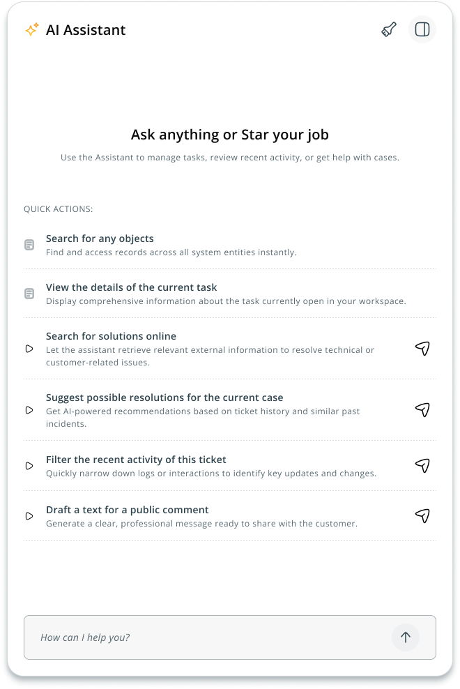
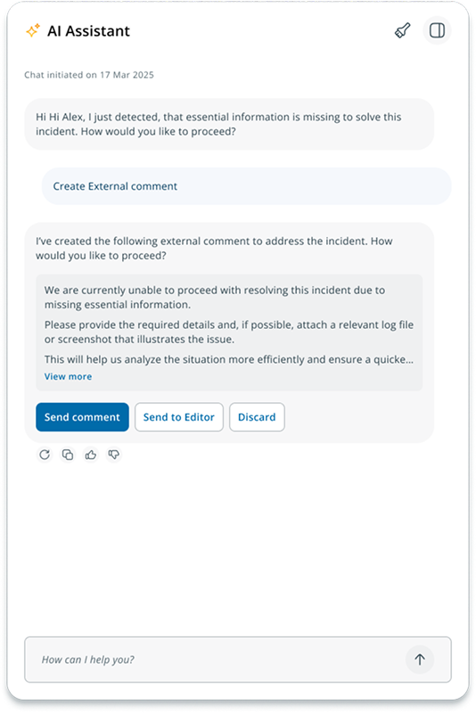
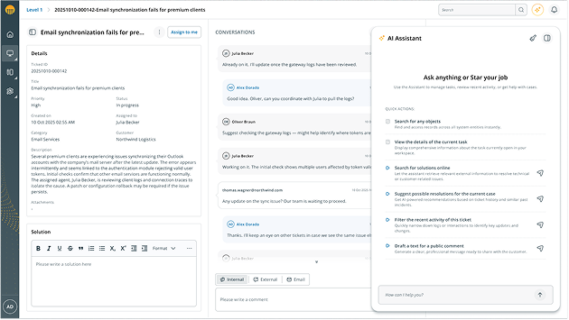
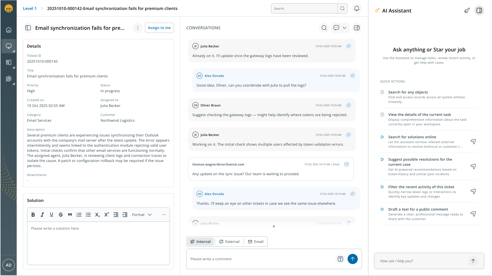

Contexto
El reto
AI Process Engine es la plataforma de Serviceware de IT Service Management orientada a integrar inteligencia artificial en la gestión de servicios empresariales, con el objetivo de automatizar procesos, reducir tareas manuales y mejorar la eficiencia operativa de los equipos de soporte. Dentro de la plataforma, los agentes son los principales usuarios, responsables de gestionar las peticiones de los clientes a través de un sistema de tickets en el Agent Workspace.
En ese contexto surgió la necesidad de crear un asistente conversacional que acompañara al agente durante su trabajo. El reto no era únicamente diseñar un chat, sino definir cómo debía presentarse un asistente de IA dentro de una herramienta operativa de alta densidad informativa, donde el agente tiene el foco puesto en resolver tickets y no en aprender a interactuar con una nueva interfaz.
Mi rol
Como Product Designer del proyecto AI Process Engine, lideré el diseño de la experiencia visual del AI Solution Assistant, trabajando en estrecha colaboración con el equipo de producto, desarrollo y especialistas en IA. Mi responsabilidad cubrió la definición visual del asistente: la vista por defecto y sus opciones de acceso rápido, el diseño de los tipos de mensajes y sus patrones de interacción, las distintas formas de integrar el panel en la pantalla y los comportamientos proactivos del asistente cuando detecta situaciones relevantes para el agente.
Proceso
La vista por defecto: utilidad desde el primer momento
Cuando el asistente no tiene historial de conversación, la pantalla en blanco no aporta nada al agente. Diseñé una vista por defecto que muestra acciones rápidas orientadas a las tareas más frecuentes del rol, de forma que el asistente sea útil desde el primer momento sin necesidad de aprender a interactuar con él. Además, definí un comportamiento proactivo para los casos en que el sistema detecta automáticamente un problema con el ticket activo al aterrizar en la pantalla, mostrando un mensaje de alerta sin que el agente tenga que preguntarle.

El diseño de los mensajes: claridad y acción en cada respuesta
La conversación entre el agente y el asistente necesitaba un sistema de mensajes que fuera claro, útil y accionable. Diseñé los distintos tipos de mensajes que estructuran la conversación: la posibilidad de ver la fuente de información en la que se basa cada respuesta, opciones de valoración mediante like y dislike, botones de acción cuando la respuesta requiere una actuación del agente con la opción más habitual destacada visualmente, y los estados de transición como el indicador de que el asistente está generando una respuesta.

La integración del panel en la pantalla: adaptarse al flujo del agente
Un asistente que se impone sobre el contenido existente o que es difícil de gestionar se convierte rápidamente en un obstáculo. Diseñé dos modos de integración pensados para distintos perfiles de uso: una vista flotante para los agentes que consultan el asistente de forma puntual, y una vista integrada en la pantalla para quienes lo mantienen siempre visible como parte de su flujo habitual.


Impacto
El diseño del AI Solution Assistant estableció las bases de la experiencia conversacional dentro del Agent Workspace. Los agentes cuentan ahora con un asistente que les acompaña en su trabajo sin interrumpir su flujo, con una vista por defecto orientada a sus tareas más frecuentes, mensajes claros y accionables, y un panel que se adapta a su forma de trabajar.
El feedback de los stakeholders y especialistas en IA que participaron en la revisión fue positivo, valorando especialmente la claridad visual de los mensajes y la coherencia de la experiencia con el resto del producto. El diseño fue adoptado además como referencia para la integración del asistente en otros proyectos del ecosistema, lo que valida que las decisiones tomadas tienen capacidad de escalar más allá del caso de uso inicial.
Aprendizajes
Diseñar el AI Solution Assistant me dejó dos aprendizajes que aplico ahora a cualquier proyecto donde la IA forma parte de la experiencia.
Diseñar para la IA es diseñar para la incertidumbre. Un asistente conversacional no siempre da respuestas perfectas, y el diseño tiene que contemplar esa realidad. Incluir la fuente de información, las opciones de valoración de la respuesta o el indicador de que el asistente está generando una respuesta no son detalles estéticos, sino mecanismos que ayudan al agente a evaluar la fiabilidad de lo que ve y a mantener el control sobre la conversación.
Una herramienta útil es la que no interrumpe. En una pantalla de alta densidad informativa como el Agent Workspace, el mayor riesgo de un asistente nuevo no es que no sea útil, sino que compita con el trabajo que el agente ya está haciendo. Las decisiones de integración (vista flotante vs integrada, acciones rápidas en la vista por defecto, comportamiento proactivo) no responden a preferencias estéticas, sino a una pregunta concreta: ¿cómo hace el asistente su trabajo sin interponerse en el del agente?